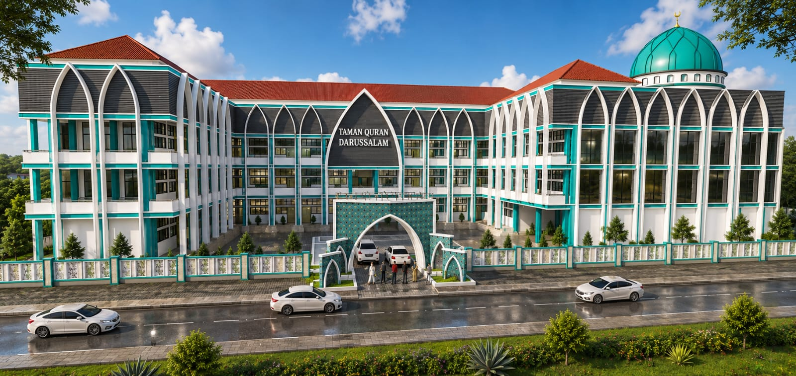

Berita Terbaru

Pembangunan SD Plus Darussalam kampus 2
SD Plus Darussalam sedang melakukan pembangunan kampus 2
**Pembangunan SD Plus Darussalam Kampus 2 Masuki Tahap Pondasi, Donasi Masih Dibuka untuk Umum**
Ngawi – Pembangunan **SD Plus Darussalam Kampus 2** terus menunjukkan progres yang positif. Saat ini, proses pembangunan telah memasuki tahap pondasi, yang menjadi langkah awal penting dalam mewujudkan fasilitas pendidikan yang representatif dan berkualitas bagi masyarakat.
Tahap pondasi merupakan bagian vital dalam pembangunan sebuah gedung, karena menjadi dasar kekuatan struktur bangunan ke depan. Dengan dimulainya tahap ini, harapan besar semakin dekat untuk menghadirkan lingkungan belajar yang nyaman, aman, dan mendukung perkembangan akademik maupun karakter siswa.
SD Plus Darussalam Kampus 2 dirancang sebagai pengembangan dari lembaga pendidikan yang telah ada, dengan tujuan memperluas akses pendidikan Islami yang unggul dan berkarakter. Ke depan, sekolah ini diharapkan mampu menjadi pusat pendidikan yang mencetak generasi berilmu, berakhlak mulia, serta siap menghadapi tantangan zaman.
Meski pembangunan telah berjalan, panitia masih membuka kesempatan bagi para dermawan dan masyarakat luas untuk turut berpartisipasi dalam bentuk donasi. Dukungan dari berbagai pihak sangat dibutuhkan agar proses pembangunan dapat berjalan lancar hingga selesai.
Setiap donasi yang diberikan tidak hanya menjadi kontribusi nyata dalam pembangunan fisik, tetapi juga menjadi amal jariyah yang pahalanya terus mengalir.
Bagi yang ingin berpartisipasi dalam pembangunan SD Plus Darussalam Kampus 2, donasi dapat disalurkan melalui:
**WhatsApp:** +62 852-1010-0165
**a/n:** Havidz Fuaddin Al Kolidi
Mari bersama-sama berkontribusi dalam membangun generasi masa depan melalui pendidikan yang lebih baik. Semoga setiap langkah kebaikan ini membawa manfaat yang luas bagi umat.